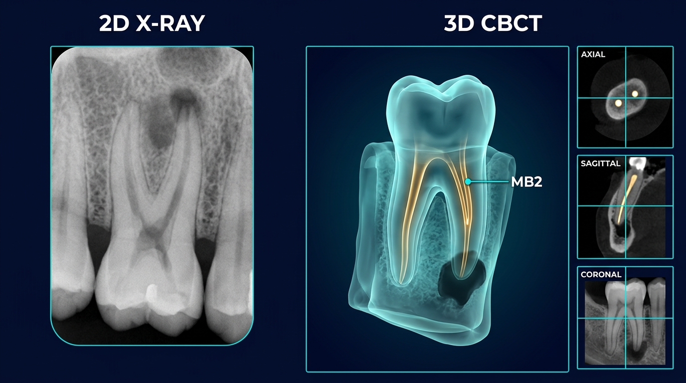

NT-05: X-quang và CBCT trong Nội nha: Chỉ định, giới hạn, lợi ích và nguy cơ bức xạ

Nếu khám lâm sàng cho ta biết "bề nổi" của chiếc răng, thì chẩn đoán hình ảnh chính là "đôi mắt xuyên thấu" giúp bác sĩ nhìn rõ hệ thống ống tủy phức tạp nằm sâu trong xương hàm. Trong Nội nha hiện đại, chúng ta có hai công cụ chủ lực: phim X-quang 2D quanh chóp truyền thống và chụp cắt lớp vi tính chùm tia hình nón (CBCT 3D). Hiểu đúng khi nào chỉ cần phim 2D, khi nào cần đến CBCT không chỉ nâng cao tỷ lệ thành công điều trị mà còn bảo vệ người bệnh khỏi phơi nhiễm bức xạ không cần thiết.
1. Phim X-quang 2D quanh chóp: Nền tảng không thể thay thế
Phim X-quang quanh chóp (Periapical Radiography) sử dụng cảm biến kỹ thuật số cho phép đánh giá nhanh thân răng, buồng tủy, số lượng – độ cong chân răng và vùng xương quanh chóp với liều bức xạ cực thấp.
- Lợi ích: Nhanh chóng, chi phí thấp, độ phân giải không gian cao để kiểm tra bờ miếng trám, côn Gutta-percha và chiều dài dụng cụ ngay tại ghế máy. Kỹ thuật đổi góc ngang (SLOB – Same Lingual Opposite Buccal) giúp bác sĩ tách hình ảnh các ống tủy chồng lấp nhau trên cùng một chân răng.
- Giới hạn cố hữu: Phim 2D nén một cấu trúc giải phẫu 3 chiều lên một mặt phẳng 2 chiều. Điều này dẫn đến hiện tượng chồng hình giải phẫu (xương gò má, sàn xoang hàm hoặc bản xương vỏ dày che khuất tổn thương), biến dạng kích thước nếu đặt góc tia chưa chuẩn và khó phát hiện đường nứt dọc chân răng hay ống tủy phụ ẩn phía trong (như ống MB2 ở răng hàm lớn hàm trên).
2. CBCT (Cone-Beam CT) trong Nội nha: Bước nhảy vọt 3 chiều
CBCT tái tạo hình ảnh theo 3 mặt phẳng không gian (Axial, Sagittal, Coronal) với trường chụp khu trú nhỏ (Small FOV – Field of View, khoảng 4×4 cm hoặc 5×5 cm) dành riêng cho vùng răng nghi ngờ.
Chỉ định hợp lý của CBCT (theo khuyến cáo AAE/AAOMR & ESE):
- Giải phẫu ống tủy phức tạp hoặc nghi ngờ bỏ sót ống tủy: Đặc biệt trong các ca nội nha lại (retreatment), răng hàm trên tìm ống MB2, răng cửa dưới 2 ống tủy, răng hình chữ C hoặc răng bị canxi hóa hẹp ống tủy.
- Triệu chứng lâm sàng dai dẳng nhưng phim 2D bình thường: Khi bệnh nhân đau kéo dài mà phim 2D không thấy tổn thương quanh chóp do bị xương vỏ dày che lấp.
- Đánh giá các biến chứng và tổn thương phức tạp: Thủng sàn tủy/thành chân răng, dụng cụ gãy, nội tiêu – ngoại tiêu chân răng (đánh giá mức độ thông thương để quyết định giữ hay nhổ), hoặc nghi ngờ nứt dọc chân răng.
- Lập kế hoạch phẫu thuật nội nha (cắt chóp): Xác định chính xác tương quan chóp chân răng với ống thần kinh răng dưới, lỗ cằm hay xoang hàm.
Giới hạn của CBCT:
- Nhiễu ảnh kim loại (Beam Hardening / Scatter Artifacts): Chốt kim loại, mão sứ kim loại hoặc miếng trám Amalgam lớn tạo ra các vệt tia sáng tối làm mờ hình ảnh, có thể che khuất hoặc giả lập đường nứt chân răng. Do đó, CBCT không phải lúc nào cũng "nhìn thấy chắc chắn" đường nứt tóc siêu mảnh.
- Chi phí và liều tia cao hơn phim 2D: Không được phép chụp CBCT thường quy cho mọi ca điều trị tủy đơn giản.
3. Kiểm soát nguy cơ bức xạ theo nguyên tắc ALARA
Mọi chỉ định chụp phim đều phải tuân thủ nguyên tắc ALARA (As Low As Reasonably Achievable — Liều thấp nhất có thể đạt được một cách hợp lý):
- Luôn bắt đầu bằng thăm khám lâm sàng kỹ lưỡng và phim X-quang 2D kỹ thuật số trước.
- Chỉ chỉ định CBCT khi thông tin 3D thực sự làm thay đổi kế hoạch chẩn đoán hoặc điều trị, và luôn chọn trường chụp khu trú nhỏ nhất (Small FOV) với độ phân giải phù hợp vùng răng cần khảo sát.
- Trang bị đầy đủ áo chì, vòng cổ bảo vệ tuyến giáp cho bệnh nhân và đặc biệt thận trọng với trẻ em, phụ nữ mang thai.
Địa chỉ: Số 15 đường Võ Nguyên Giáp, phường Đức Xuân, tỉnh Thái Nguyên
Hotline & Zalo tư vấn trực tiếp: 0912 343 858 · Website: https://tcvuong6-wq.github.io/bsvuong-web/